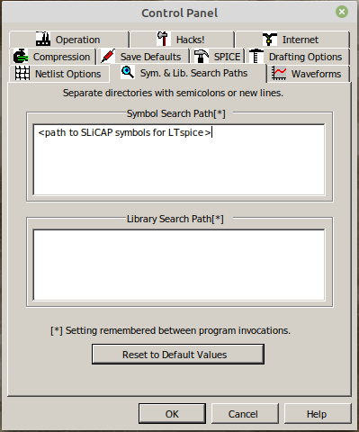
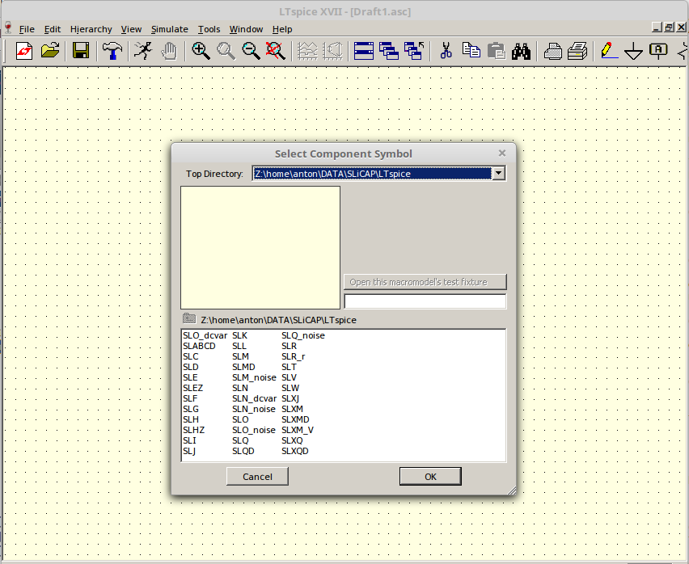

SLiCAP LTspice¶
Install and configure LTspice for schematic capture¶
If you want to use LTspice as schematic capture program you also need to install and/or configure LTspice as schematic capture program for SLiCAP. To this end you need to:
Install the latest version of LTspice
Start LTspice
On the menu bar click Tools > Control Panel. This will bring up the LTspice control panel:
On this control panel select the Netlist Options tab and select the options as shown below:
Then select the Sym. & Lib. Search Paths tab and enter the full path to the “LTspice” subdirectory of your SLiCAP install path. This directory contains all the SLiCAP symbol definitions (‘.asy’ files) for LTspice:
Then select the Drafting Options tab and change the font size and deselect the “Bold” checkbox as shown below. If you want, you can also select different colors for your schematics.
Draw the circuit in LTspice¶
Knowledge of drawing circuits with LTspice is assumed.
Open LTspice and select File > New Schematic from the menu bar. Place a component on the schematic by clicking the AND gate symbol on the tool bar or by pressing the “F2” key (default Hot Keys setting). This will bring up the Select Component Symbol menu. On this menu select the directory with the SLiCAP symbols from Top Directory drop-down select box, as shown below:
All SLiCAP symbol names start with “SL”!
Place an independent voltage source “SLV”, a resistor “SLR” and a capacitor “SLC” and create the circuit depicted below:
Please note:
- The node of interconnection of the resistor and the capacitor is labeled as out. Later we need to refer to this node. SLiCAP will name the voltage at this node V_out.
- A default ground symbol (node 0) has been used.
- The use of the spice directive .param: it defines symbolic or numeric values of parameters.
Save the circuit myFirstRCnetwork.asc in the project directory.
If you want to display the circuit on a SLiCAP output html page, you need to create an image file of it that can be rendered by a browser. A .png file is a good candidate. You can generate a PNG from a screen dump with a graphic file editor (Paint, Gimp, Photoshop, etc.). Here we assume that the graphic file myFirstRCnetwork_asc.png has been saved in the project directory. It is shown above.
{kind=link}
Create a SLiCAP netlist from an LTspice schematic file¶
Use the python instruction makeNetlist()¶
A netlist from an LTspice ‘.asc’ schematic file can be generated from within the python environment using the command:
>>> makeNetlist(<fileName>, <title>)
Where ‘fileName’ is the name of the LTspice schematic file (including the ‘.asc’ file extension) and ‘title’ is the title of your circuit. Place it between double quotes (“) if you use space(s) or characters other than letters. Do not start your title with an asterix: ‘*’.
The makeNetlist() command calls LTspice in batch mode (subprocess) to create the netlist and then adds the title to it.
Manual creation of a netlist¶
If for some reason the makeNelist() command does not work, you can manually create a SLiCAP netlist.
Open the schematic file in LTspice.
On the LTspice task bar select View: and on this View menu select: SPICE Netlist
This will display the netlist.
In this netlist window right-click your mouse and select: Edit as Independent Netlist
This will bring up the Save window. It will display the contents of the directory of the .asc file of which you are generating the netlist. Save your netlist as a .cir netlist file.
After the netlist file has been saved it will be displayed in a new tab
Edit the title or add one:
The first line of the file is the title of your circuit. It should not start with an asterix: ‘*’. Place it between double quotes (“) if you use space(s) or characters other than letters.
Save the netlist file.